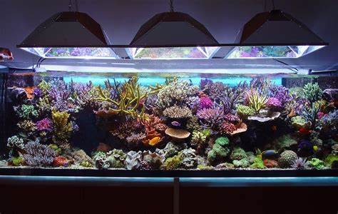

Welcome to Understanding Angelfish Health
Angelfish, with their graceful and distinctive appearance, are a popular choice for aquarium enthusiasts. Maintaining the health and well-being of these beautiful fish is not only rewarding but also essential for their longevity. This website is your guide to comprehending the various factors that can affect the health of your angelfish, as well as how to address and prevent common issues.
The Importance of a Healthy Angelfish
Your angelfish's health is a reflection of the care and attention you provide as an aquarist. Healthy angelfish exhibit vibrant colors, active behaviors, and a sense of vitality. On the other hand, an unhealthy angelfish may display a range of concerning symptoms and suffer from ailments that could lead to suffering or even death.
By understanding the key aspects of angelfish health, from maintaining water quality to providing proper nutrition and recognizing early signs of disease, you can create a thriving environment for your angelfish, enhancing their quality of life and your enjoyment of this fascinating species.
Common Signs of Unhealthy Angelfish
- Loss of Appetite: Angelfish may stop eating or eat less when they're unwell.
- Lethargy: Unhealthy angelfish often appear less active and may rest at the tank's bottom.
- Fading Colors: A decline in their vibrant colors may indicate stress or illness.
- Clamped Fins: Angelfish should have open and relaxed fins; clamped fins are a sign of distress.
- Rapid Breathing: Gasping at the water surface or rapid breathing can signal problems.
- Inflated or Bloated Appearance: Bloating may result from digestive issues or internal parasites.
- Scratching or Flashing: Repeatedly rubbing against tank decorations can indicate external parasites or skin irritations.
- Cloudy or Abnormal Eyes: Cloudy or bulging eyes may indicate eye infections or other health problems.
- Frayed or Ragged Fins: Damaged fins can be due to fin rot, aggression, or injuries.
- Visible Sores or Lesions: Open sores, lesions, or white spots can signal bacterial or fungal infections.
- Abnormal Swimming Patterns: Erratic swimming or balance issues can be due to neurological problems or swim bladder issues.
- Stringy or Discolored Feces: Unusual feces may indicate internal problems like parasites or digestive issues.
- Flicking Gills: Rapid gill movement suggests respiratory distress or poor water quality.
Water Quality
Water quality is one of the fundamental factors that directly impact the health and well-being of your angelfish. Maintaining clean and stable water conditions is essential for their survival. Here are some key aspects to consider:
Parameters to Monitor
When assessing water quality, you should regularly monitor the following parameters:
- Temperature: Angelfish prefer a temperature range of 75-82°F (24-28°C).
- pH Level: Aim for a pH level between 6.5 and 7.5 to match their natural habitat.
- Ammonia, Nitrite, and Nitrate Levels: Keep ammonia and nitrite levels at zero, and maintain nitrate levels below 20 ppm.
- Hardness: Maintain water hardness within the range of 3-8 dGH.
Water Testing and Maintenance
To ensure optimal water quality:
- Regularly test the water parameters using appropriate test kits.
- Perform partial water changes (around 20-30%) every 1-2 weeks to reduce the buildup of toxins.
- Use a high-quality filtration system to remove debris and maintain biological stability.
How Poor Water Quality Affects Angelfish
Poor water quality can lead to stress and various health issues in angelfish, including:
- Increased susceptibility to diseases.
- Fading colors and reduced vitality.
- Respiratory problems and gill damage.
- Stunted growth and developmental issues in young angelfish.
Diet and Nutrition
The diet of your angelfish plays a crucial role in maintaining their health and vitality. Proper nutrition is essential for their growth and overall well-being. Here's what you need to know:
The Role of Nutrition in Angelfish Health
Angelfish require a balanced diet to thrive. Proper nutrition is essential for the following reasons:
- Optimal Growth: A well-balanced diet ensures healthy development and growth, especially in young angelfish.
- Vibrant Colors: Nutrient-rich food helps maintain their striking colors.
- Resistance to Disease: Proper nutrition boosts their immune system, making them more resilient to diseases.
- Reproduction: A good diet is crucial for successful breeding and the health of fry.
Choosing the Right Food
When selecting food for your angelfish, consider the following guidelines:
- High-Quality Flakes or Pellets: Opt for high-quality angelfish-specific flakes or pellets as a staple food source.
- Frozen or Live Foods: Offer occasional treats like brine shrimp, bloodworms, and daphnia for variety and extra nutrients.
- Vegetable Matter: Include some vegetable matter in their diet, such as blanched spinach or cucumber slices.
Feeding Frequency and Amount
Establish a feeding routine to ensure your angelfish receive the right amount of food:
- Feed adult angelfish 2-3 times a day, with portions they can consume in 2-3 minutes.
- For young angelfish, increase feeding frequency to 3-4 times a day for proper growth.
- Avoid overfeeding, as excess food can lead to water quality issues and health problems.
Dietary Requirements
Understanding the specific dietary needs of angelfish is key:
- Protein: Angelfish require protein for growth, so make sure their diet includes protein-rich foods.
- Fats: Include fats in their diet for energy and overall health.
- Fiber: Some vegetable matter adds fiber to their diet, aiding digestion.
- Vitamins and Minerals: Ensure they receive a variety of foods to cover their vitamin and mineral requirements.
Disease and Parasites

Angelfish, like all aquarium fish, can be susceptible to various diseases and parasites. Recognizing the signs of illness and taking prompt action are vital for maintaining their health. Here's what you need to know:
Common Angelfish Ailments
Angelfish can experience a range of common ailments, including:
- Ich (White Spot Disease): Characterized by white cysts on the skin, gills, and fins.
- Fin Rot: Evident by frayed, decaying fins and tails.
- Columnaris: A bacterial infection leading to cotton-like growths on the skin, gills, and mouth.
- Parasitic Infections: Various external parasites such as flukes and gill worms.
- Internal Parasites: Worms or flagellates that can infect their digestive system.
Preventing and Treating Diseases
To prevent and address angelfish diseases:
- Quarantine new fish before introducing them to your main tank to prevent the spread of diseases.
- Maintain optimal water quality and a stable environment to reduce stress, a common factor in disease outbreaks.
- Isolate and treat sick angelfish in a separate tank to avoid contaminating the entire population.
- Consult a veterinarian or experienced aquarist for accurate diagnosis and treatment options.
Quarantine Procedures
When introducing new fish or isolating sick angelfish, follow these quarantine guidelines:
- Use a separate quarantine tank with similar water parameters to your main tank.
- Observe the isolated fish for at least two weeks to ensure they are disease-free before introducing them to the main tank.
- Treat the quarantine tank with appropriate medications if necessary.
Identifying External Parasites
External parasites may be identified by symptoms such as:
- Visible Parasites: Look for tiny organisms on the skin, gills, or fins of your angelfish.
- Scratching and Rubbing: If angelfish continuously rub their bodies against tank decorations, they may be trying to dislodge parasites.
- Abnormal Behavior: Parasitic infections can cause erratic swimming or flashing, where fish suddenly dart around the tank.
Tank Setup and Environment
The environment in which you house your angelfish has a significant impact on their health and well-being. Creating the right tank setup and maintaining the appropriate environment is essential for the happiness and longevity of your angelfish. Here's what you need to know:
Choosing the Right Tank
Start by selecting an appropriate tank for your angelfish:
- Tank Size: Angelfish require a tank that is at least 20 gallons (75 liters) in size, with more space being preferable for larger groups or additional tank mates.
- Tank Shape: A tall tank is ideal, as angelfish have long, elegant fins and enjoy swimming vertically. It provides them with ample space to move comfortably.
- Heater: Install a reliable aquarium heater to maintain a stable water temperature between 75-82°F (24-28°C), which mimics their natural habitat in the Amazon River basin.
Aquascaping and Decorations
Creating a well-structured and visually pleasing tank is beneficial for angelfish:
- Plants: Incorporate live or artificial plants to provide cover and mimic their natural environment. Amazon swords, Java ferns, and anubias are popular choices.
- Substrate: Use fine-grained, soft substrates like sand or smooth gravel to protect their delicate fins when they rest on the tank bottom.
- Decorations: Include driftwood, rocks, and caves to create hiding spots and territorial boundaries. These also make the tank more aesthetically pleasing.
Proper Filtration and Aeration
Maintaining water quality is crucial for angelfish health:
- Filtration: Choose a quality aquarium filter that can handle the tank's size and bioload. A canister or sponge filter is often a good choice for angelfish tanks.
- Cycle the Tank: Ensure that the tank has undergone the nitrogen cycle before introducing angelfish. This establishes a healthy biological filtration system and reduces ammonia and nitrite levels.
- Aeration: Use an air pump or a filter with adequate surface agitation to maintain proper oxygen levels in the water. Angelfish prefer well-oxygenated water.
Stress Factors

Stress Factors and Environment
Creating a suitable environment for your angelfish is essential for their health and well-being. Stress factors can significantly impact the overall health of your angelfish. Here's what you need to know:
Choosing the Right Tank
Start by selecting an appropriate tank for your angelfish:
- Tank Size: Angelfish require a tank that is at least 20 gallons (75 liters) in size, with more space being preferable for larger groups or additional tank mates.
- Tank Shape: A tall tank is ideal, as angelfish have long, elegant fins and enjoy swimming vertically. It provides them with ample space to move comfortably.
- Heater: Install a reliable aquarium heater to maintain a stable water temperature between 75-82°F (24-28°C), which mimics their natural habitat in the Amazon River basin.
Aquascaping and Decorations
Creating a well-structured and visually pleasing tank is beneficial for angelfish:
- Plants: Incorporate live or artificial plants to provide cover and mimic their natural environment. Amazon swords, Java ferns, and anubias are popular choices.
- Substrate: Use fine-grained, soft substrates like sand or smooth gravel to protect their delicate fins when they rest on the tank bottom.
- Decorations: Include driftwood, rocks, and caves to create hiding spots and territorial boundaries. These also make the tank more aesthetically pleasing.
Stress Factors and Management
Identifying and managing stress factors is crucial for angelfish health:
- Sources of Stress: Recognize potential stressors such as sudden water parameter changes, aggressive tank mates, or inadequate hiding places.
- Mitigating Stressors: Take steps to reduce stress, including maintaining stable water conditions, choosing compatible tank mates, and providing hiding spots.
- Importance of Tank Mates: Select tank mates that are peaceful and won't harass your angelfish, as bullying can cause severe stress.
- Handling and Transport: Minimize handling and stress during maintenance or when moving your angelfish between tanks.
Breeding and Genetics

If you're interested in breeding angelfish, understanding the intricacies of breeding and genetics is vital. Here's what you need to know:
Genetics and Hereditary Traits
Angelfish, like many species, carry specific genetic traits that influence their appearance and health:
- Color Variations: Angelfish exhibit various color patterns, including silver, marble, and striped varieties, which result from different genetic combinations.
- Hereditary Diseases: Be aware of genetic diseases that can be passed down through breeding, such as swim bladder disorders and dwarfism.
- Genetic Diversity: Promoting genetic diversity in your breeding programs helps reduce the risk of hereditary health issues in offspring.
Rearing Fry and Parental Care
Successful breeding involves proper care for both parent angelfish and their fry:
- Spawning Behavior: Familiarize yourself with the unique behaviors of angelfish during breeding, including pairing rituals and the formation of breeding pairs.
- Nutrition: Provide a balanced and nutritious diet to breeding pairs to ensure the health and development of their fry.
- Separating Fry: Once the fry are free-swimming, consider moving them to a separate rearing tank to protect them from potential predation by the adult angelfish.
- Water Quality: Maintain optimal water quality, especially in the rearing tank, to support the growth and development of the fry.
Veterinary Care and Medication

Understanding when to seek professional veterinary care and how to administer medication is essential for maintaining the health of your angelfish:
When to Consult a Veterinarian
Recognizing the signs that warrant professional help is crucial:
- Unusual Behavior: If your angelfish exhibit unusual behaviors, such as swimming irregularly, hiding constantly, or showing signs of distress, consult an aquatic veterinarian for diagnosis and treatment.
- Visible Symptoms: The presence of physical symptoms like lesions, discoloration, or abnormal growths may indicate a need for professional examination and care.
- Respiratory Distress: Rapid or labored breathing, gill damage, or unusual respiratory patterns can be signs of underlying health issues that require veterinary attention.
Medications and Treatments
Understanding common medications and treatments for angelfish illnesses is vital:
- Medication Types: Familiarize yourself with various medications available for treating angelfish illnesses, such as antibiotics, antiparasitics, and antifungals.
- Follow Instructions: When using medications, carefully follow the recommended dosage and administration instructions to ensure effective treatment without harming your angelfish.
- Quarantine and Treatment Tank: Isolate sick angelfish in a separate quarantine or treatment tank to prevent the spread of disease and to concentrate treatment efforts.
- Monitoring and Post-Treatment Care: Provide proper post-treatment care, including maintaining water quality and monitoring your angelfish's recovery after medication administration.
Preventive Measures

Proactive steps can help maintain the health of your angelfish and prevent common issues. Here are some important preventive measures to consider:
Regular Maintenance Routines
Establish and follow regular tank maintenance routines to ensure a healthy environment for your angelfish:
- Water Changes: Schedule routine water changes to maintain water quality. Aim for a 20-30% water change every 1-2 weeks.
- Filter Maintenance: Clean and maintain your aquarium filter to prevent the accumulation of debris and toxins. Follow the manufacturer's recommendations for filter maintenance.
- Water Quality Testing: Regularly test water parameters such as pH, ammonia, nitrite, and nitrate levels to ensure they are within the appropriate range for angelfish.
Quarantine Procedures
Implement effective quarantine procedures when introducing new fish to your tank:
- Isolation Tank: Use a separate quarantine tank for new fish before introducing them to your main tank. Ensure similar water parameters in the quarantine tank.
- Observation Period: Observe the isolated fish for at least two weeks to ensure they are disease-free before transferring them to the main tank.
- Treatment as Needed: If any health issues are detected during quarantine, address them with appropriate treatments before introducing the fish to the main tank.
Monitoring and Record Keeping
Keep track of key information to detect and address problems promptly:
- Record Keeping: Maintain a log of water parameters, feeding schedules, and any health issues that arise in your aquarium.
- Regular Observations: Spend time observing your angelfish regularly to identify any behavioral or physical changes that may indicate health issues.
- Early Intervention: Address any problems or deviations from the norm as soon as you notice them, to prevent the escalation of health issues.
Community and Resources

Connecting with a community of fellow aquarists and accessing valuable resources can be a great support for angelfish enthusiasts. Here's how you can get involved:
Online Forums and Communities
Participate in online forums and communities to share experiences, seek advice, and connect with other angelfish keepers:
- Forums and Discussion Boards: Join popular fishkeeping forums where you can post questions, share your knowledge, and engage with experienced aquarists.
- Social Media Groups: Find Facebook groups, subreddits, and other social media communities dedicated to angelfish care and aquarist discussions.
- Specialized Websites: Explore websites and blogs with detailed information on angelfish care, breeding, and maintenance tips.
Recommended Books and Websites
Discover valuable resources that provide in-depth information about angelfish care and related topics:
- Books: Look for recommended books on angelfish care and aquarium maintenance, written by experts in the field.
- Websites: Visit websites that specialize in aquarium care, aquatic species profiles, and comprehensive guides for angelfish enthusiasts.
- Blogs and Magazines: Explore blogs and online magazines dedicated to the world of aquarism and fishkeeping, including angelfish care articles and updates.
Finding Local Aquarists and Clubs
Consider joining local aquarium clubs or connecting with nearby hobbyists who can offer hands-on assistance and advice:
- Aquarium Clubs: Find local or regional aquarium clubs that hold meetings, events, and discussions related to fishkeeping. These clubs can be a great resource for networking with experienced aquarists.
- Local Fish Stores: Visit local fish stores and inquire about local aquarium clubs or other hobbyists who might share your interest in angelfish and aquatic life.
- Aquarist Gatherings: Attend aquarist gatherings, workshops, or conventions in your area to meet fellow enthusiasts, gain knowledge, and build a supportive community.
Additional Resources
Explore additional resources that can enhance your knowledge of angelfish care and the aquarium hobby:
- Workshops and Seminars: Check for workshops, seminars, and educational programs offered by local or regional aquarium clubs and organizations.
- Publications: Keep an eye out for aquarium-related publications and magazines that feature articles on angelfish and other aquatic species.
- Online Courses: Consider enrolling in online courses or webinars that focus on various aspects of fishkeeping, including angelfish care and breeding techniques.
Conclusion
In conclusion, maintaining the health of your angelfish is a rewarding responsibility that requires dedication and knowledge. By understanding the common signs of illness, providing the right environment, and taking proactive measures, you can ensure the well-being of your angelfish and enjoy the beauty they bring to your aquarium.
Remember that angelfish care is a continuous journey, and ongoing learning and observation are key to success. Whether you're a beginner or an experienced aquarist, the well-being of your angelfish is worth the effort and care you put into it.